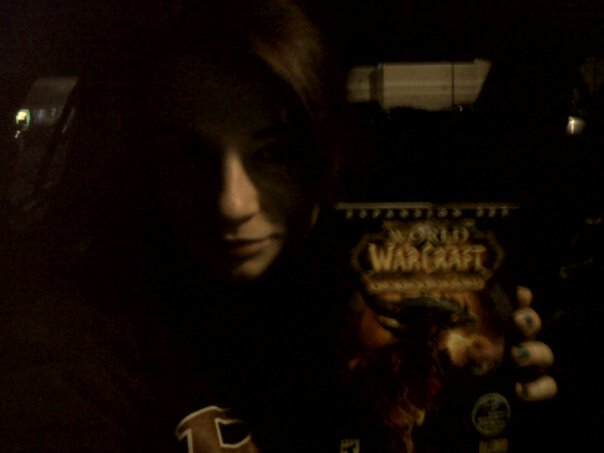

About The World of Warcraft
In the gorgeous world of Azeroth, you—the hero—take on the challenge of saving it from certain doom. World of Warcraft is whatever you make it: you can fight monsters, run dungeons with friends, or just collect pets, outfits (known as transmog), and mounts. Blizzard also loves its holidays and events—every week brings special content with awesome rewards and achievements. Even at max level, there’s always something new to do. The game has endless replayability, offering something for every type of player.
Over the weekend, I stumbled across a gem at our local record shop—a treasure trove of comics, old gaming consoles, and Pokémon cards. Among the finds was a real relic: the discs for Vanilla and The Burning Crusade. All for $2.99—an absolute steal! It instantly reminded me of the midnight launches for Wrath of the Lich King and Cataclysm. Those nights were pure magic, full of excitement, anticipation, and a little chaos—exactly what makes WoW so unforgettable.

This photo was taken on December 6th, 2010. I was sitting in my car at 11:55 PM, clutching the physical copy of the game because GameStop had broken the street date (a major no-no!) by about ten minutes. I was so thrilled that I had to grab my Blackberry and snap a terribly grainy photo—because clearly, the world needed proof of my fangirl excitement in that very moment.
